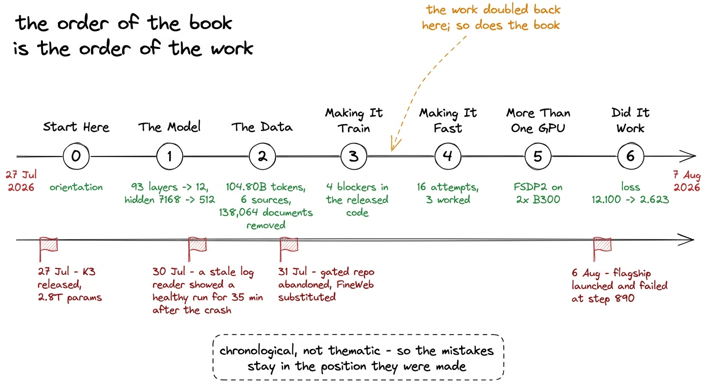
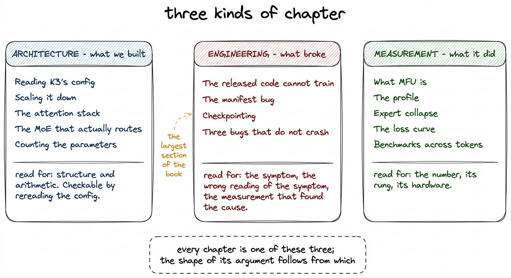
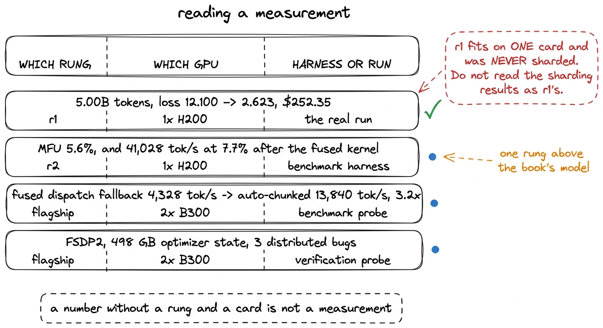
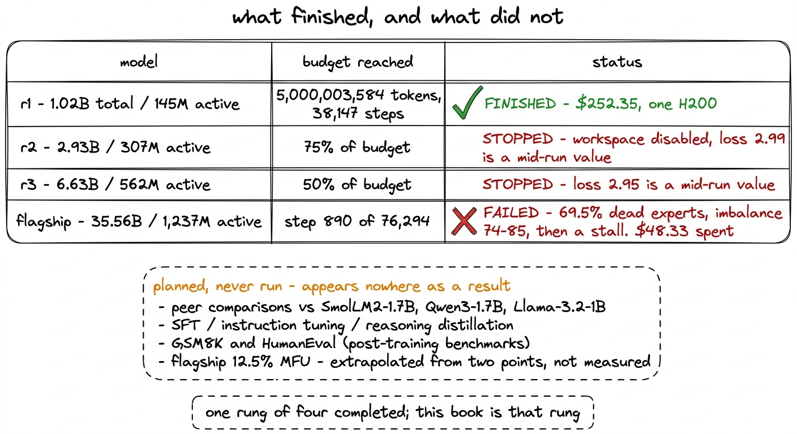
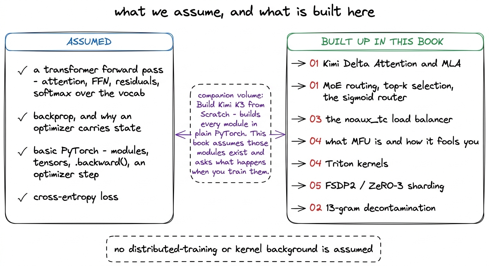
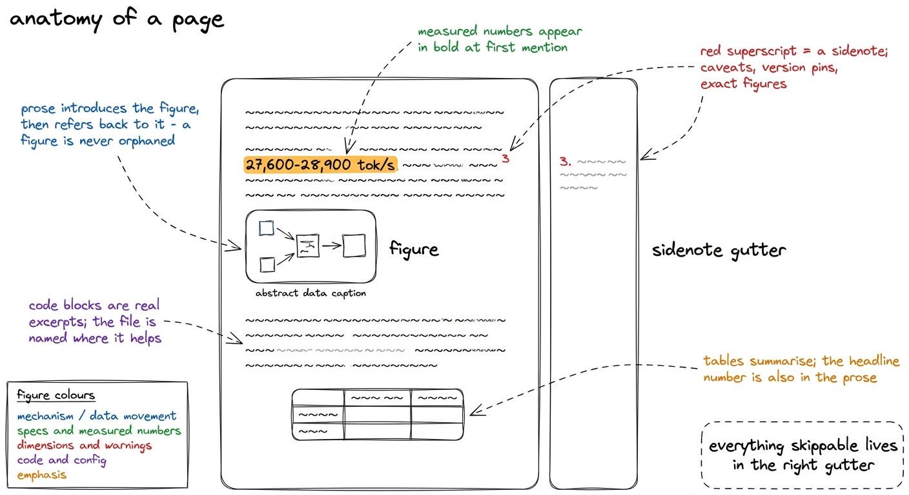

How to read this book
A worklog, not a tutorial: every number is measured, every failed idea is written up as fully as the successful ones, and the commands that produced each figure are included.
A worklog is a record of work in the order it was done. It is not a syllabus, and it is not a tutorial that has been tidied up after the fact so that every step follows from the one before it. This book is a worklog, and the arrangement that follows from that decision is worth explaining before the technical chapters begin, because a reader expecting a textbook will find the order strange.
The project it records ran from 27 July 2026, when Moonshot AI released Kimi K3, to 7 August 2026, when the numbers in this book were pinned. In those days we built a 1.02-billion-parameter replica of K3's architecture, assembled and decontaminated a 104.80-billion-token corpus, found four reasons the released modeling code cannot train at all, ran sixteen numbered attempts at improving throughput, trained the first rung of a scaling ladder for 38,147 steps on one H200 at a cost of $252.35, and watched the largest model in the same ladder fail.
The chapters appear in roughly that order. Where the work doubled back — and it did, several times — the chapter doubles back with it.

figure rendering · The book's seven sections against the stretch of work that produced thWhy chronological rather than thematic
A thematic ordering would put every routing decision in one chapter, every throughput decision in another, and every distributed-training decision in a third. It reads more cleanly. It also destroys the information we most want to keep, which is when each thing was known.
The load balancer is the clearest case. The constant that controls it, gamma, was swept at 4,096 tokens per step, chosen, and then re-swept at the real 131,072 tokens per step because the batch had changed by a factor of 32. A thematic chapter would report the second sweep, since it is the one that governed the run. The worklog reports both, in order, because the reason the second sweep exists is the argument the first sweep produced. Reading the two in sequence teaches something the final answer alone does not.
The same holds for the throughput work, most of which was measured on r2, one rung above the model this book is about. Sixteen attempts were run and three worked. Presented thematically, the thirteen that did not work become a list of things to avoid. Presented in order, they become thirteen inferences drawn from reading the code, followed by the profile that explained why the code behaved as it did. The second version is the useful one, and it only exists if the chapters stay in the order the work happened.
The three kinds of chapter
Chapters in this book do one of three jobs, and knowing which job a chapter is doing tells you how to read it.
Architecture chapters describe what we built and why the numbers in it are those numbers. Section 01 is entirely architecture: K3's released configuration, the arithmetic of shrinking it, the attention stack, the mixture of experts, and the parameter counter. These chapters are structural. They contain few measurements and a lot of arithmetic, and their claims are checkable by rereading the config rather than by rerunning anything.
Engineering chapters describe what broke. The four blockers in the released modeling code, the manifest bug that would have trained the stable phase on one corpus, the checkpoint commit that lived only in a dying container, the three distributed bugs that complete a run and return a wrong model — these are the chapters where something was already wrong and had to be found.1 One of the four blockers fails non-deterministically, which is why it took a rung comparison to find. KimiDeltaAttention.dt_bias is allocated with torch.empty and never initialised, so it holds whatever was in that memory. r2 trained normally on it while r1 returned NaN from step 0, from the same line of code. They follow a fixed shape: the symptom, what the symptom looked like it meant, and the measurement that identified the actual cause.
Measurement chapters report what the system did. The MFU investigation, the profile, the gamma sweeps, the loss curve and the twenty-four benchmark evaluations belong here. Every number in them is attributed, and every number that is an extrapolation rather than a measurement is labelled as one in the sentence that carries it.

figure rendering · The three chapter types and what each one is asking the reader to checHow to read a measurement in this book
This is the convention that carries the most weight in the chapters that follow, and misreading it produces a wrong belief about what was actually trained.
The project trained four models, not one. They form a ladder: r1 at 1.02B total and 145M active, r2 at 2.93B and 307M active, r3 at 6.63B and 562M active, and a flagship at 35.56B and 1,237M active.2 A scaling ladder fixes the recipe and varies only scale, so that throughput and hyperparameters measured cheaply on a small rung can be used to price a large one. The chapter on scaling down explains how the rungs were sized; the closing chapter explains what the ladder was ultimately for. They ran on different hardware, and several of the most quoted numbers in this book were measured on a rung that is not the one the book is about.
r1 is the model this book is about. r1 trained on one H200 and was never sharded. Every distributed-training result — FSDP2, ZeRO-3, the 498 GB of optimizer state, the three bugs that do not crash — comes from the flagship on two B300s, and describes what the models above r1 required rather than anything r1 did. Most of the throughput work was measured on r2, one rung up. The fused-dispatch cliff, the last of the sixteen attempts, was measured on the flagship.
So every measurement in this book carries three pieces of provenance, and we write them into the sentence rather than into a footnote: which rung, which GPU, and whether the number came from a benchmark harness or from the real 38,147-step run.

figure rendering · The provenance every measurement in this book carries. Numbers measureThere is a fourth distinction inside that third slot, and it is larger than expected. A benchmark harness runs a fixed shape for a few dozen steps with nothing else attached. A real run carries a schedule, a dataloader reading from 1,063 shards, checkpoint writes every 100 steps, and all the accumulated state that $252.35 of H200 time at $4.54 an hour buys. On r1, the harness measured 66,877 tokens per second at 5.9% MFU, and the run that actually happened sustained 27,600 to 28,900 tokens per second at 2.4 to 2.5%. Both figures are correct. Neither is a substitute for the other, and where this book quotes one it says which.
The same gap between a probe and a run shows up in the checkpointing and monitoring chapters, which is why they sit where they do. Checkpoints are written every 100 steps rather than the original 250, so about fifteen minutes of work is at risk instead of about thirty-two, and a COMPLETE marker is written last so that a partially written directory is never resumed from. Two monitoring thresholds had to be changed once auto-stop became real: an MFU_FLOOR of 0.20 fired on every step of every healthy run, because measured MFU here is 5 to 8%, and an expert-collapse gate that was fatal on a single reading fired on a trajectory that reaches 69 to 95% dead experts in the first thirty steps and then recovers. The floor is now 3% and collapse requires five consecutive reports. Numbers of that kind only make sense against a real run, and the book presents them that way.
One caveat rides along with every MFU number here, so it is easiest to state once. MLA runs on an sdpa shim registered under the flash_attention_2 key, because the released modeling code hard-forces that string and the asymmetric-head-dim padding only runs on that branch. It is numerically identical and slower, so every MFU figure in this book understates what flash attention would give.3 Two version pins matter if you intend to run any of this: transformers must be 4.57.6, because >=4.56 resolves to 5.x, which removed OutputRecorder, an import the Kimi modeling code makes at module scope; and datasets is pinned to 2.21.0 because 3.x removed script datasets, which the evaluation suite needs.
What did not finish
Of the four models on the ladder, one finished.
r1 completed its full 5,000,003,584-token budget. r2 and r3 were stopped at 75% and 50% of their token budgets when the compute workspace was disabled, so their loss values of 2.99 and 2.95 are mid-run readings and are reported as such. The flagship was launched on 6 August 2026 and failed: 69.5% dead experts, load imbalance between 74 and 85, then a stall, at step 890 of a planned 76,294, having spent $48.33.
Several other things in this project were planned and never run, and they do not appear as results anywhere in the book. Peer comparisons against SmolLM2-1.7B, Qwen3-1.7B and Llama-3.2-1B were designed and not executed. No supervised fine-tuning, instruction tuning or reasoning distillation was performed, so r1 is a base model that has only ever done next-token prediction. GSM8K and HumanEval are post-training benchmarks and were deliberately not run. The flagship's 12.5% MFU is an extrapolation from a two-point power law and is never described as a measurement.

figure rendering · The state of the ladder. Three of four rungs are incomplete, and the cWe put this in the orientation section rather than in a closing note because the engineering described in Sections 03, 04 and 05 was built for all four models. A reader who meets FSDP2 in Section 05 without having been told that the model it was built for never trained past step 890 would reasonably assume otherwise.
What we assume, and what is built up here
We assume a reader knows what a transformer is at the level of a forward pass — attention, a feed-forward block, residual connections, a softmax over a vocabulary — and understands backpropagation well enough to be unsurprised by optimizer state. We assume basic PyTorch: modules, tensors, an optimizer step, and what .backward() does.
Everything specific to this project is built up in the book. Kimi Delta Attention and multi-head latent attention are explained in Section 01 before they are used. Mixture-of-experts routing, top-k selection and the aux-loss-free balancer are built from the router equation in Section 01 and then taken apart again in Section 03 when they fail. Triton is introduced in Section 04 at the point where a fused activation kernel becomes the cheapest available option, not before. FSDP2 and ZeRO-3 are built from the arithmetic of what has to live on each rank, in Section 05. Model FLOPs Utilization gets its own chapter before any MFU number is quoted at length.

figure rendering · The background this book expects, and the material it constructs. TheThere is a companion volume in the same library, Build Kimi K3 from Scratch, which builds every one of K3's components in plain PyTorch as small runnable code: Kimi Delta Attention, gated MLA, attention residuals, LatentMoE. This book assumes those modules exist and asks a different question, which is what it costs to train them on real data without wasting the money. The two can be read in either order. If you want to know how a delta-rule attention layer computes its output, that book answers it. If you want to know why nine of twelve layers are delta-rule layers and what that ratio does to throughput, this one does.
Figures, sidenotes, code and numbers
Four conventions run through every chapter.
Figures are hand-drawn diagrams and carry a consistent colour grammar: blue for mechanism and data movement, green for specifications and measured quantities, red for dimensions and warnings, purple for code and configuration, orange for emphasis. Numbered circles give the reading order where a figure has one. Most figures end with a dashed box holding the single sentence the figure exists to support. Prose always introduces a figure before it appears and refers back to it afterwards, so a figure never has to be interpreted alone.
Sidenotes sit in the right margin and carry the caveats that would derail a paragraph: a version pin, a hardware exception, a counter that double-counts under activation checkpointing, an exact figure where the prose has rounded. They are skippable on a first pass and are usually where the sharp edges live.
Code blocks are real excerpts from the project, and where it helps we name the file — train/ladder.py for the ladder definition, train/moe_train.py for the trainable gate and the balancer, train/init_patch.py for the initialisation fix, train/situ_triton.py for the fused activation. No API in this book is invented. Where a code block shows an output value, that value is a measured one.
Numbers appear in bold in the prose at first mention and again in a table where a table is the clearer form. The bold number and the table always agree; where they do not, the table is a summary of several runs and the prose says which one it is quoting.

figure rendering · The page conventions used throughout. Sidenotes are skippable on a firWho gets the most from this
The reader this book was written for has trained a small model at least once, has read a modern architecture paper, and now wants to know what stands between those two things and a run that survives contact with a GPU bill. The gap is not conceptual. It is decontamination, checkpoint semantics, load-balancer constants, kernel launch counts, alert thresholds and the difference between a benchmark and a run, and none of those appear in papers because they are not results.
A second reader will find it useful for a different reason: anyone about to spend real money on a training run and wanting to know where it goes. The cost of r1 was $252.35 of H200 time.4 That figure is r1's GPU bill and nothing else. The corpus pass cost roughly $17 of CPU, the continuous evaluation ran on a separate A100 at about $0.13 per evaluation every ~1,000 steps, and the flagship's failed launch spent $48.33 of its own. Storage is the recurring line at $0.09 per GiB per month. The MFU investigation exists because at 2.4 to 2.5% MFU, about 97.5% of that rental was not doing the arithmetic we were paying for, and the sixteen attempts to change that are the most transferable material here.
The data chapter serves the same reader. The corpus pass scanned 107,291,411 documents and removed 138,064 of them, a rate of 0.1287%, and the per-source rates are the interesting part: the two maths corpora dropped at 0.7239% and 0.6747% against 0.0280% for plain web text. A filter that fires uniformly across sources is the result that should worry you. That chapter also states its own coverage limit rather than burying it, because a benchmark row shorter than thirteen words produces no 13-gram and cannot be filtered against at all, which leaves TriviaQA only 49% covered.
The reader who will be disappointed is one looking for a strong model. r1 reaches 33.4% on HellaSwag, against a 25% chance level, and stays at chance on MMLU and ARC-Challenge for the whole run. At 145M active parameters and 5B tokens, those flat curves are the capability boundary of the scale, not failures of the run, and the evaluation chapter says so before it says anything else.
Three ways through
Read it front to back if you want the project as it happened. Sections 00 and 01 set up the model, and everything after them is consequences.
Read Section 04 alone if you care about throughput. It stands on its own, needs only the ladder definition from Section 01, and contains the profile that explained the whole investigation.
Read Sections 03 and 05 alone if you are about to run something large and want the failures without the architecture. The four blockers, the expert collapse, the checkpoint that lived in a dying container, the twenty-four failure-injection tests and the three distributed bugs are all there, and every one of them describes a run that completes while being wrong.
Whichever route you take, carry the provenance rule with you. Which rung, which GPU, harness or run. Almost every way of misreading this book starts with dropping one of those three.